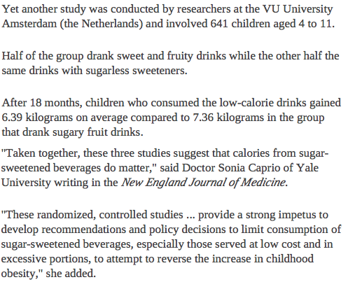

2.7 Optional questions
These questions are optional; e.g., if you need more practice, or you are studying for the exam. (Answers appear in Sect. A.2.)
2.7.1 (Optional) Sampling
Suppose we needed a sample of \(80\) vehicles parked at UniSC (Sippy Downs campus), and we wish to determine the proportion displaying P-plates.
Determine a practical way to find a representative sample. The map below of the UniSC Sippy Downs campus may prove helpful (areas labelled P on the campus grounds are UniSC car parks).
2.7.3 (Optional) Understanding studies
Fish oil has been touted as helpful to the health of the heart. A newspaper report of one such study (GISSI-Prevenzione Investigators 1999) is shown in Fig. 2.1. Answer the questions that follow.
FIGURE 2.1: From The Downs Star, Thursday March 18, 1999.
Identify the variables involved.
Explain whether the study is observational or experimental.
If the study is experimental, determine if the principles of randomization, control, blinding and double-blinding, and blocking have been used. Also determine if it is a true experiment or a quasi-experiment.
If the study is observational, determine if the study uses a forward direction (cohort study), a backward direction (case-control study), or is non-directional (cross sectional).
Which one of the following, if any, would be a potential lurking variable?
Explain.- The general health of the subject.
- The average amount of water consumed each day by the subjects.
- Gender.
Is a cause-and-effect relationship reasonable? Explain.
What are the limitations of the study?
Identify the units of observation, and the units of analysis.
What did you learn from this report?
2.7.4 (Optional) Random allocation
For a small pilot study, Sam allocated \(12\) students (\(6\) males and \(6\) females) to one of two groups. In the Report associated with the study, Sam stated that the \(12\) students were
...randomly allocated to one of two groups (Group A or Group B).
Different interventions were applied to each group. A reviewer, however, noted that all the subjects in Group A were male, and all the subjects in Group B were female.
- Would this be a problem? Why?
- Do you agree with Sam, that the subjects really were allocated to the groups at random? Explain your answer.
2.7.5 (Optional) Evaluating reports
Many health experts are concerned about the amount of sugary drinks consumed by children. Part of a newspaper report about a study into this issue is shown in Fig. 2.2. Two variables are listed in the extract:
- The type of drink (sweetened with sugar, or with sugarless sweeteners); and
- Weight gain.
- What words could be used to describe these variables?
- The sample size is reasonably large: \(n = 641\). Does this imply high precision or high accuracy?
- How could the accuracy be improved?

FIGURE 2.2: From: www.news.com.au, Tuesday 25 September 2012.
2.7.6 (Optional) Designing and planning studies
To study the progress of an imported species of beetle, a research group is studying the RQ:
Is the average number of species of beetle found on trees different between local coniferous and broad leaf forests?
Ten possible forests of each type have been found, and the research budget allows for \(100\) trees to be sampled. Three designs are being considered:
- A. Randomly sample \(50\) trees from one randomly selected coniferous forest, and \(50\) trees from one randomly selected broad leaf forest.
- B. Randomly sample \(5\) trees from ten randomly sampled coniferous forests, and \(5\) trees from ten randomly selected broad leaf forests.
- C. Randomly sample \(10\) trees from five randomly sampled coniferous forests, and \(10\) trees from five randomly selected broad leaf
The researchers wish to know which design they should use.
- Identify (with justification) which of these designs will be best for estimating the variation within a forest.
- Identify (with justification) which of these designs will be best for estimating the variation that exists between the forest (that is, from one forest to the next).
- Which design do you think would be best for answering the RQ? Explain your answer.
- Which design do you think would be the easiest design for data collection?